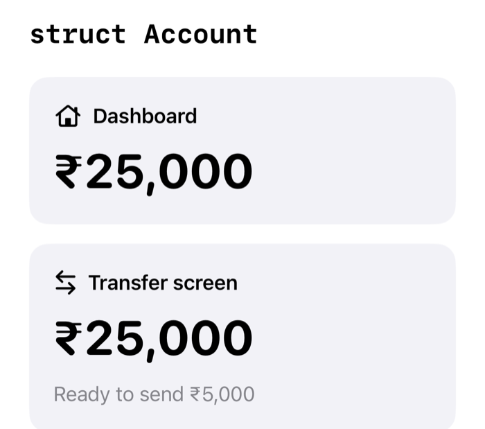
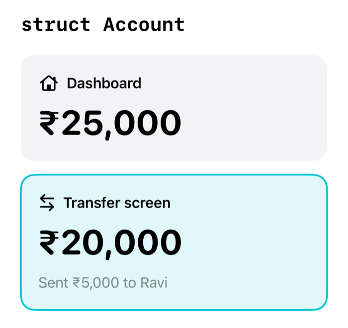
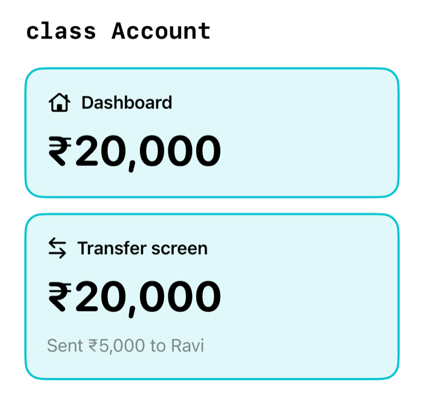
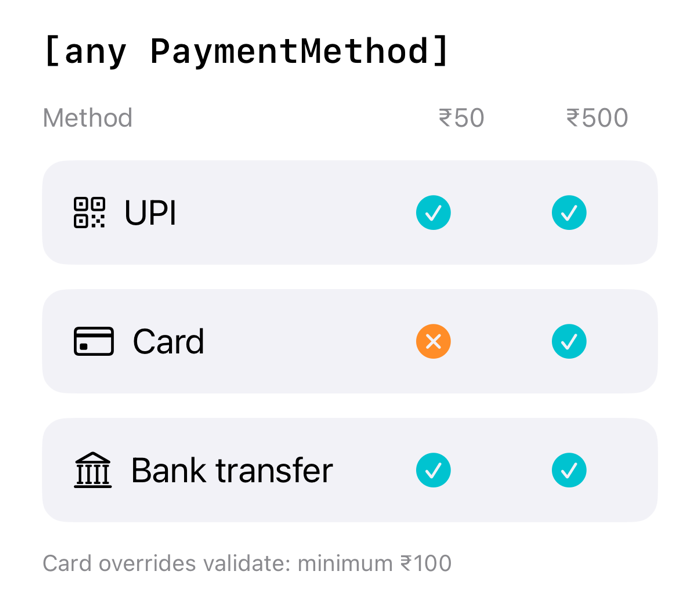
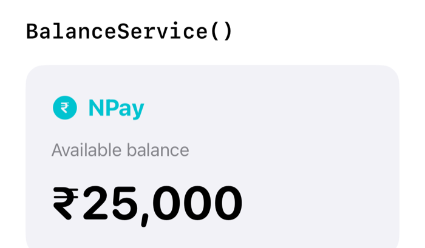
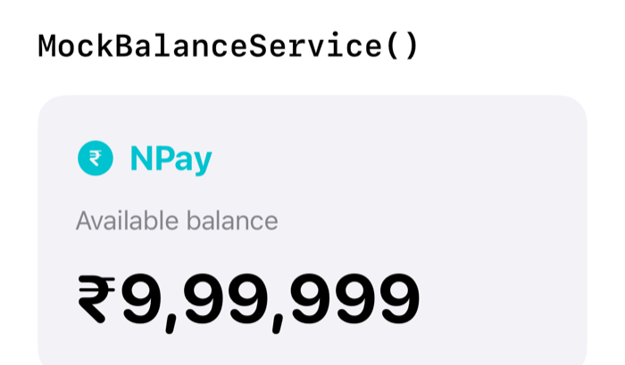

Unit 01 · Swift
The Swift behind every box on the Unit 00 map, built up as NPay’s own code.
Unit 01 · Outcomes
Explain how Swift becomes machine code, and why it is type-safe
Model data that may be missing with optionals, safely
Choose between structs and classes, and pass logic with closures
Design with protocols, generics and explicit errors
Find and fix retain cycles with ARC
Write concurrent code with tasks and actors, without data races
Unit 01 · Overview
| Part | Topic | In one line |
|---|---|---|
| Part 1 | Swift and its compiler | how source becomes machine code |
| Part 2 | Variables, constants & types | storing NPay’s data safely |
| Part 3 | Optionals | data that may be missing |
| Part 4 | Functions & closures | logic you can name and pass |
| Part 5 | Structs vs classes | copied values or shared objects |
| Part 6 | Protocols & extensions | contracts and capabilities |
| Part 7 | Generics & errors | write once; fail on purpose |
| Part 8 | ARC & memory | who keeps an object alive |
| Part 9 | Concurrency | tasks, async/await, actors |
| Part 10 | NPay’s domain model | everything, in one engine |
Part 1
Why Swift, and how source becomes machine code
Part 1 · Design goals
Introduced by Apple in 2014: a modern alternative to Objective-C that still works with existing Apple technologies.
native compiled code
NPay: NPay’s history scrolls smoothly
types, optionals, memory checks
NPay: a missing name cannot crash NPay
short, clear code
NPay: one line formats ₹25,000
works with Apple’s frameworks
NPay: NPay uses SwiftUI and Face ID
Part 1 · Compilation pipeline · conceptual
let amount = 500 let quantity = 3 let total = amount * quantity print(total)
Building NPay sends every .swift file through the same stages before anything runs on the iPhone.
Part 1 · SIL and LLVM
A representation designed for Swift. It keeps Swift’s semantics so the compiler can check and optimize them before lowering the code further.
A compiler infrastructure project. Swift uses it to optimize and generate native machine code for each supported target.
Our six lines, compiled with swiftc -O (Swift 6.3, arm64):
| Stage | What we see | Meaning |
|---|---|---|
| SIL | smul_with_overflow_Int64 | Swift semantics kept: the multiply is overflow-checked |
| LLVM IR | store i64 1500 | LLVM worked out 500 × 3 at compile time |
| Assembly | mov w20, #1500 | one processor instruction loads the answer |
Part 1 · Comparison
| Feature | Swift | Java | Python | JavaScript |
|---|---|---|---|---|
| Typical execution | Native compilation | JVM bytecode / JIT | Interpreter / VM | Engine / JIT |
| Type system | Static | Static | Dynamic | Dynamic |
| Null handling | Explicit optionals | Nullable references | None | null, undefined |
| Memory management | ARC + value semantics | Garbage collection | Reference counting + GC (CPython) | Garbage collection |
| Common app UI | SwiftUI, UIKit | Java UI ecosystems | Various frameworks | Web and other frameworks |
Broad comparisons: language implementations and execution modes vary.
Part 1 · Declaring a variable
let balance = 25000 var customerName = "Ravi"
final int balance = 25000; String customerName = "Ravi";
balance = 25000 customer_name = "Ravi"
let is an immutable binding; var is a mutable variable.
No type written, yet the compiler knows: balance is an Int, customerName is a String.
Part 1 · Type checking
var balance = 25000 // inferred: Int
Real swiftc messages (Swift 6.3).
balance = 30000
Compiles an Int into an Int
balance = "30000"
error: cannot assign value of type ‘String’ to type ‘Int’
balance = 30000.5
error: cannot assign value of type ‘Double’ to type ‘Int’
Part 1 · The full stack
Part 1 · Recap
Compiled to native code
source → SIL → LLVM → machine code
Types checked at build time
inferred, never silently converted
The top of the stack
NPay’s Swift, on Apple’s platform
Part 1 · Check your understanding · 1 of 2
Which is the Swift compilation pipeline?
The Swift frontend lowers source to SIL, a Swift-specific representation, then to LLVM IR; LLVM generates the machine code.
Common trap: Putting LLVM before SIL.
Part 1 · Check your understanding · 2 of 2
Does Swift always execute through a JVM-like virtual machine?
Swift is commonly compiled ahead of time to native machine code for Apple platforms. There is no bytecode VM.
Common trap: Assuming every modern language runs on a VM.
Part 1 · Lab
Compile the example and find each stage in the compiler’s output. Swift only, no Xcode project.
main.swift; build and run it.quantity to "3", build again, and read the error.let amount = 500 let quantity = 3 let total = amount * quantity print(total)
swiftc main.swift -o total && ./total swiftc -emit-sil -O main.swift | grep smul swiftc -emit-ir -O main.swift | grep 1500 swiftc -S -O main.swift | grep 1500
On a Mac, prefix with xcrun if swiftc is not found.
Part 2
let, var, types, money and collections
Part 2 · The problem
let customerName = "Ravi" let accountNumber = "NP1001" var balance = 25000 var isActive = true print(customerName) print(balance)
Part 2 · Reassignment
let balance = 25000 balance = 30000
ERROR cannot assign to value: ‘balance’ is a ‘let’ constant
var balance = 25000 balance = 30000
balance is now ₹30,000
let unless the value must be reassignedlet does not always make an object immutable (“let with classes”)Part 2 · Inference
let name = "Ravi" let age = 30 let balance = 25000.50 let isActive = true
| Initial value | Inferred type |
|---|---|
"Ravi" | String |
30 | Int |
25000.50 | Double |
true | Bool |
var balance = 25000 balance = 30000 // valid balance = "30000" // error
ERROR cannot assign value of type ‘String’ to type ‘Int’
Part 2 · Core types
whole numbers
let transferCount = 364-bit floating point
let latitude = 19.0732-bit floating point
let progress: Float = 0.5true or false
let isActive = truetext
let payee = "Ravi"one extended grapheme cluster
let rupee: Character = "₹"Int8, UInt16, Int32, UInt64…Int is 64-bit (Int.bitWidth == 64)Part 2 · Money
let a = 0.1 let b = 0.2 print(a + b == 0.3) print(a + b)
Prints false, then 0.30000000000000004
let balanceMinor: Int64 = 2_500_000 // ₹25,000 let transferMinor: Int64 = 25_000 // ₹250 let remaining = balanceMinor - transferMinor print(remaining)
Prints 2475000: exactly ₹24,750
Int64 (balanceMinor), or use a decimal typePart 2 · Conversion
let count: Int = 3 let price: Double = 99.5 let total = count * price // error let total2 = Double(count) * price // 298.5
ERROR binary operator ‘*’ cannot be applied to operands of type ‘Int’ and ‘Double’
print(Int(3.9)) // 3 print(Int(-3.9)) // -3 print(Int(3.9.rounded())) // 4
.rounded() when you mean roundingPart 2 · Strings
let customer = "Ravi"
let balance = 25000
let message =
"Hello \(customer), your balance is ₹\(balance)"
print(message)Prints Hello Ravi, your balance is ₹25000
\(…) inserts a value’s text into a stringlet flag = "🇮🇳" print(flag.count) // 1 Character print(flag.unicodeScalars.count) // 2 Unicode scalars
A Character is an extended grapheme cluster: one or more Unicode scalars.
Part 2 · Tuples
let account = (
number: "NP1001",
balance: 25000
)
print(account.number) // NP1001
print(account.balance) // 25000BankAccount (“A practical NPay model”)Part 2 · Collections
var transactions = [500, 200, 900] let paymentMethods: Set<String> = ["UPI", "CARD", "NEFT"] var balances: [String: Int] = ["Ravi": 25000, "Meena": 18000]
Part 2 · Evidence
let methods: Set<String> = ["UPI", "CARD", "NEFT"] print(methods)
| Run | Output |
|---|---|
| 1 | ["NEFT", "UPI", "CARD"] |
| 2 | ["CARD", "NEFT", "UPI"] |
Same program, different order on each run.
var balances = ["Ravi": 25000, "Meena": 18000] print(balances["Ravi"]) // Optional(25000) print(balances["Asha"]) // nil
nil, not a crashPart 2 · let and mutation
class BankAccount {
var balance = 25000
}
let account = BankAccount()
account.balance = 30000Compiles. The reference is constant; the instance is not.
struct BankAccount {
var balance = 25000
}
let account = BankAccount()
account.balance = 30000ERROR cannot assign to property: ‘account’ is a ‘let’ constant
Part 2 · Summary
| Declaration | Reassign the variable? | Modify a var property? |
|---|---|---|
let + struct | No | No |
var + struct | Yes | Yes |
let + class | No | Yes |
var + class | Yes | Yes |
Assumes the property is declared var and is accessible.
let fixes the binding. For a class, that binding is a reference, so the instance can still change.Part 2 · Model
struct BankAccount {
let accountNumber: String
var balanceMinor: Int64 // paise
mutating func deposit(_ amountMinor: Int64) {
guard amountMinor > 0 else { return }
let (sum, overflow) = balanceMinor.addingReportingOverflow(amountMinor)
guard !overflow else { return }
balanceMinor = sum
}
}
var account = BankAccount(accountNumber: "NP1001", balanceMinor: 2_500_000)
account.deposit(50_000) // balanceMinor is now 2550000Part 2 · Recap
let by default
var only when it must change
Types fixed at build time
inferred, converted explicitly
Money in paise
Int64, never Double
Part 2 · Check your understanding · 1 of 2
What does this print?
print(Int(-3.9))
Conversion to Int truncates toward zero. It does not round, and it does not floor to -4.
Common trap: Expecting rounding (-4) or flooring (-4).
Part 2 · Check your understanding · 2 of 2
Is Double generally ideal for exact financial amounts?
Binary floating point cannot represent many decimal fractions exactly. NPay keeps whole paise in Int64.
Common trap: Trusting printed values that look exact.
Part 2 · Lab
Extend the model; test your predictions on the command line.
BankAccount with deposit.withdraw: reject amounts ≤ 0 or above the balance; return Bool.0.1 + 0.2 == 0.3, Int(3.9), Int(-3.9).Set of payment methods; run twice and compare.let and read the compiler error.struct BankAccount {
let accountNumber: String
var balanceMinor: Int64 // paise
// deposit(_:) from the slide
// TODO: mutating func withdraw(_ amountMinor: Int64) -> Bool
}withdrawPart 3
Modelling data that may be missing
Part 3 · The problem
| Field | Value |
|---|---|
| Customer name | Ravi |
| Account number | NP1001 |
| ravi@example.com | |
| Middle name | not provided |
null · Python Nonenull or undefinednil, only where the type allows itlet customerName: String = "Ravi" let middleName: String = nil // error let middleName2: String? = nil // valid
ERROR ‘nil’ cannot initialize specified type ‘String’
Part 3 · The box
enum Optional<Wrapped> {
case none
case some(Wrapped)
}
// String? is shorthand for Optional<String>Int?, Balance?, [String]?Part 3 · Unwrapping
let middleName: String? = "Kumar" print(middleName.count) // error
ERROR value of optional type ‘String?’ must be unwrapped to refer to member ‘count’ of wrapped base type ‘String’
Part 3 · Unwrapping
let middleName: String? = "Kumar"
print("Middle name: \(middleName)")
// Middle name: Optional("Kumar")
print("Middle name: \(middleName ?? "")")
// Middle name: Kumarwarning: string interpolation produces a debug description for an optional value; did you mean to make this explicit?
Part 3 · if let
let middleName: String? = "Kumar"
if let name = middleName {
print("Middle name: \(name)")
} else {
print("No middle name")
}if let middleName { … } unwraps under the same nameguard letPart 3 · guard let
func sendNotification(email: String?) {
guard let email = email else {
print("Email unavailable")
return
}
print("Sending notification to \(email)")
}return, throw, break or continuePart 3 · ??
let nickname: String? = nil let displayName = nickname ?? "Customer" print(displayName)
nickname | nickname ?? "Customer" |
|---|---|
"Ravi" | Ravi |
nil | Customer |
let balanceMinor: Int64? = nil // not loaded let shown = balanceMinor ?? 0 // shows ₹0
Part 3 · Chaining
struct Address { let city: String }
struct Customer {
let name: String
let address: Address?
}
let customer = Customer(name: "Ravi",
address: nil)
let city = customer.address?.city // String?String?, because any link may be missingPart 3 · Force unwrap
let nickname: String? = nil print(nickname!)
Fatal error: Unexpectedly found nil while unwrapping an Optional value
if let, guard let, ??. Use ! only with a guarantee you could defend in a review.Part 3 · API models
{
"customerId": "C1001",
"name": "Ravi",
"email": null
}struct CustomerResponse: Decodable {
let customerId: String // required
let name: String // required
let email: String? // may be null or absent
}| Response | Result | Decoding |
|---|---|---|
"email": null | email == nil | decodes |
no "email" key | email == nil | decodes |
no "customerId" key | DecodingError.keyNotFound | fails |
Part 3 · try?
let customer = try? JSONDecoder().decode(
CustomerResponse.self, from: data)
// success → CustomerResponse? failure → nilnil, no reasondo {
let customer = try JSONDecoder().decode(
CustomerResponse.self, from: data)
print(customer.name)
} catch {
print(error) // keyNotFound "customerId"
}Part 3 · Mistakes
| Mistake | Better approach |
|---|---|
| Force unwrap every optional | Use if let or guard let |
| Replace a missing balance with zero | Represent unavailable data explicitly |
Make every property String? | Model the actual domain requirements |
Ignore decoding failures with try? | Handle errors when details matter |
Assume ?. returns a non-optional | The chain’s result is optional |
Part 3 · Choosing
| Tool | Use it when | NPay example |
|---|---|---|
if let | do something only if the value is there | if let email { send a receipt to it } |
guard let | the rest of the function needs it | guard let token else { return } (signed out) |
?? | a sensible default exists | nickname ?? name → “Ravi” |
?. | reach through things that may be missing | customer.address?.city |
! | a guarantee you could defend in a review | almost never in NPay |
Part 3 · Example
struct Customer {
let id: String
let name: String
let email: String?
let nickname: String?
}
func displayCustomer(_ customer: Customer) {
let displayName = customer.nickname ?? customer.name
print("Welcome, \(displayName)")
if let email = customer.email { print("Email: \(email)") }
else { print("Email not provided") }
}Customer(id: "C1001",
name: "Ravi Kumar",
email: nil,
nickname: "Ravi")
Welcome, Ravi
Email not provided
Part 3 · Recap
Absence is in the type
String? is Optional<String>
Unwrap safely
if let, guard let, ??, ?.
! is a promise
break it and the app traps
Part 3 · Check your understanding · 1 of 2
What does this print?
let nickname: String? = "Ravi" print(nickname ?? "Customer")
?? uses the wrapped value when it exists; the fallback is only for nil.
Common trap: Expecting Optional("Ravi").
Part 3 · Check your understanding · 2 of 2
What happens at run time when you force unwrap nil?
“Fatal error: Unexpectedly found nil while unwrapping an Optional value.” The compiler cannot check it for you.
Common trap: Thinking the compiler catches it.
Part 3 · Lab
Decode a small customer list, then break it on purpose.
?? for the name, if let or guard let for the email.customerId from one customer.try?, then with do/catch; compare what you learn.! you used with safe unwrapping.struct CustomerResponse: Decodable {
let customerId: String
let name: String
let email: String?
let nickname: String?
}
// decode [CustomerResponse] from the JSON in the notes
// for each: print nickname ?? name, and the email or "no email"try? told you vs do/catchPart 4
Logic you can name, pass and run later
Part 4 · The problem
let fee1 = 100_000 * 2 / 100 // ₹1,000 let fee2 = 250_000 * 2 / 100 // ₹2,500 let fee3 = 500_000 * 2 / 100 // ₹5,000
Part 4 · First function
func calculateFee(amountMinor: Int64) -> Int64 {
return amountMinor * 2 / 100
}
let fee = calculateFee(amountMinor: 100_000)
print(fee) // 2000 paise = ₹20| Transfer | amountMinor | Returns | Fee |
|---|---|---|---|
| ₹1,000 | 100_000 | 2000 | ₹20 |
| ₹2,500 | 250_000 | 5000 | ₹50 |
| ₹5,000 | 500_000 | 10000 | ₹100 |
| Part | Meaning |
|---|---|
func | declares a function |
calculateFee | the function name |
amountMinor: Int64 | parameter and its type |
-> Int64 | return type |
return | returns a result |
Part 4 · Vocabulary
func greet(name: String) {
print("Hello, \(name)")
}
greet(name: "Ravi")name: String"Ravi"Part 4 · Argument labels
func transfer(from source: String,
to destination: String,
amountMinor: Int64) {
print("\(source) → \(destination): \(amountMinor)")
}
transfer(from: "NP1001", to: "NP2002", amountMinor: 50_000)| External label (caller) | Internal name (body) |
|---|---|
from | source |
to | destination |
amountMinor | amountMinor |
transfer("NP1001", "NP2002", 50_000)
Part 4 · Omitting labels
func square(_ number: Int) -> Int {
number * number
}
print(square(5)) // 25
print(square(number: 5)) // errorERROR extraneous argument label ‘number:’ in call
square(5)numberprint(x), square(5)Part 4 · Tuples and defaults
func accountSummary() -> (balanceMinor: Int64,
isActive: Bool) {
(balanceMinor: 2_500_000, isActive: true)
}
let result = accountSummary()
print(result.balanceMinor) // 2500000
print(result.isActive) // truefunc calculateFee(amountMinor: Int64,
percent: Int64 = 2) -> Int64 {
amountMinor * percent / 100
}
print(calculateFee(amountMinor: 100_000))
// 2000
print(calculateFee(amountMinor: 100_000, percent: 3))
// 3000percentpercent: 3Part 4 · What is a closure?
let greet = {
print("Hello from a closure")
}
greet() // Hello from a closurePart 4 · Syntax
let add: (Int, Int) -> Int = { a, b in
return a + b
}
print(add(10, 20)) // 30func add(…){ a, b in … }| Piece | Meaning |
|---|---|
(Int, Int) -> Int | the closure’s type |
{ … } | the closure expression |
a, b | its parameters |
in | separates parameters from the body |
return a + b | the result |
Part 4 · Buttons
import SwiftUI
struct DashboardView: View {
var body: some View {
Button("Refresh balance") {
print("Button tapped")
}
}
}Part 4 · Passing closures
func applyFee(to amountMinor: Int64,
rule: (Int64) -> Int64) -> Int64 {
amountMinor + rule(amountMinor)
}
applyFee(to: 100_000, rule: { _ in 1_000 }) // 101000: ₹10 flatapplyFee(to: 100_000) { $0 * 2 / 100 } // 102000: 2%
Button("Transfer") { // SwiftUI
print("Transfer tapped")
}( )$0 is the first parameterPart 4 · Capture
func makeCounter() -> () -> Int {
var count = 0
return {
count += 1
return count
}
}
let counter = makeCounter()
print(counter(), counter(), counter()) // 1 2 3
let other = makeCounter()
print(other()) // 1Part 4 · @escaping
func executeNow(action: () -> Void) {
action() // runs during the call
}final class TaskManager {
var savedAction: (() -> Void)?
func register(action: @escaping () -> Void) {
savedAction = action // kept for later
}
}ERROR assigning non-escaping parameter ‘action’ to an ‘@escaping’ closure
Part 4 · Closures and ARC
@MainActor
final class DashboardViewModel {
var onRefresh: (() -> Void)?
func configure() {
onRefresh = { self.refresh() } // cycle
// fix: { [weak self] in self?.refresh() }
}
func refresh() { print("Refreshing") }
deinit { print("DashboardViewModel deinit") }
}Set the ViewModel to nil and run:
| Capture | Result |
|---|---|
strong self | nothing prints: leaked |
[weak self] | “deinit” prints: freed |
[weak self] only for escaping closures that self keepsPart 4 · Higher-order functions
let transactions = [500, 1200, 300, 2500]
let doubled = transactions.map { $0 * 2 } // [1000, 2400, 600, 5000]
let large = transactions.filter { $0 > 1000 } // [1200, 2500]
let total = transactions.reduce(0) { result, value in
result + value
} // 4500Part 4 · In practice
| Where | Code | Note |
|---|---|---|
| Button action | Button("Show history") { showHistory = true } | runs on each tap |
| Sorting | transactions.sorted { $0.date > $1.date } | newest first |
| Filtering | transactions.filter { $0.amountMinor > 100_000 } | above ₹1,000 |
| Stored callback | var onRefresh: (() -> Void)? | escaping: mind the cycle |
| Async work | .task { await model.refresh() } | lives with the view |
Part 4 · Recap
Functions name logic
labels make calls read well
Closures are values
stored, passed, run later
Captures keep things alive
@escaping + self: think weak
Part 4 · Check your understanding · 1 of 2
let a = makeCounter()
let b = makeCounter() print(a(), a(), b())
Each call to makeCounter() creates a new closure with its own captured count.
Common trap: Thinking all counters share one count.
Part 4 · Check your understanding · 2 of 2
A function stores its closure parameter in a property. Must the parameter be marked @escaping?
A closure that may run after the function returns escapes; the compiler rejects storing it otherwise.
Common trap: Thinking @escaping is an optimization hint.
Part 4 · Lab
Functions, closures and higher-order functions on real NPay amounts.
calculateFee with a 2% default.filter, then map.reduce.deinit, then fix it.let transfers: [Int64] = [50_000, 120_000, 30_000, 250_000] // paise // 1. calculateFee(amountMinor:percent:) with percent = 2 by default // 2. fees for transfers above ₹1,000: filter, then map // 3. total of those fees: reduce // 4. makeReceiptCounter() -> () -> String // "NP-R1", "NP-R2"…
Part 5
Copied values or shared objects
Part 5 · The problem
Part 5 · In the Simulator

Start: both screens ₹25,000

struct: send ₹5,000 on Transfer, Dashboard still ₹25,000">struct: send ₹5,000 on Transfer, Dashboard still ₹25,000

class: send ₹5,000, both screens ₹20,000">class: send ₹5,000, both screens ₹20,000
Part 5 · Struct and class
struct Account {
var balanceMinor: Int64 // paise
}
var accountA = Account(balanceMinor: 2_500_000)
var accountB = accountA
accountB.balanceMinor = 2_000_000
print(accountA.balanceMinor) // 2500000
print(accountB.balanceMinor) // 2000000Two values. Changing B left A alone.
final class Account {
var balanceMinor: Int64
init(balanceMinor: Int64) {
self.balanceMinor = balanceMinor
}
}
let accountA = Account(balanceMinor: 2_500_000)
let accountB = accountA
accountB.balanceMinor = 2_000_000
print(accountA.balanceMinor) // 2000000One instance. Both names see ₹20,000.
Part 5 · Comparison
| Feature | Struct | Class |
|---|---|---|
| Semantics | Value | Reference |
| Identity | No object identity | Object identity (===) |
| Inheritance | No class inheritance | Supports inheritance |
| ARC | Not ARC-managed as an instance | Instances managed by ARC |
| Deinitializer | No deinit* | Supports deinit |
| Mutating methods | Need mutating | No mutating keyword |
| Memberwise init | Synthesized | Write init yourself |
| Typical use | Data models and values | Shared identity, services |
* Non-copyable structs (~Copyable) can have a deinit; Part 8.
Part 5 · mutating and init
struct Account {
var balanceMinor: Int64
mutating func deposit(_ amountMinor: Int64) {
balanceMinor += amountMinor
}
}
var account = Account(balanceMinor: 2_500_000)
account.deposit(500_000)
print(account.balanceMinor) // 3000000ERROR left side of mutating operator isn’t mutable: ‘self’ is immutable
struct Customer { // memberwise init: free
let id: String
var name: String
}
let customer = Customer(id: "C1001", name: "Ravi")
class CustomerRecord { // no init written
let id: String
var name: String
}ERROR class ‘CustomerRecord’ has no initializers
Part 5 · === and ==
final class Customer {
let name: String
init(name: String) { self.name = name }
}
let a = Customer(name: "Ravi")
let b = Customer(name: "Ravi")
let c = a
print(a === b) // false
print(a === c) // truestruct CustomerValue: Equatable {
let name: String
}
print(CustomerValue(name: "Ravi") ==
CustomerValue(name: "Ravi")) // trueEquatablePart 5 · Copy-on-write
var a = [10, 20, 30] var b = a // shares a's buffer b.append(40) // b gets its own buffer print(a) // [10, 20, 30] print(b) // [10, 20, 30, 40]
Measured: do a and b use the same buffer address?
Before b.append(40) | true: one shared buffer |
| After | false: separate buffers |
Array, Dictionary, Set, StringPart 5 · ARC and SwiftUI
final class Customer {
let name: String
init(name: String) {
self.name = name; print("Created")
}
deinit { print("Destroyed") }
}
var customer: Customer? = Customer(name: "Ravi")
customer = nilCreated
Destroyed
import SwiftUI
struct BalanceView: View {
let balanceText: String // from the ViewModel
var body: some View {
Text(balanceText)
}
}Part 5 · Decision
STRUCT
Transaction record
a value: data
Money amount
equal amounts are interchangeable
SwiftUI screen
a cheap description, remade often
CLASS
Observable ViewModel
one instance the screen watches
Session manager
one identity, shared state
Part 5 · NPay model
struct Money: Equatable {
let amountMinor: Int64 // paise
let currency: String // "INR"
}
struct Transaction: Equatable {
let id: String
let amount: Money
let description: String
}
final class SessionManager {
private(set) var isLoggedIn = false
func login() { isLoggedIn = true }
func logout() { isLoggedIn = false }
}final: no subclassingPart 5 · Recap
Values copy, references share
semantics, not stack or heap
=== is identity, == is value
only classes have identity
Struct first
class when identity is the point
Part 5 · Check your understanding · 1 of 2
let a = Customer(name: "Ravi")
let b = Customer(name: "Ravi") let c = a print(a === b, a === c)
Same data does not make the same object. c is another name for a.
Common trap: Expecting === to compare names.
Part 5 · Check your understanding · 2 of 2
Does let account = Account(…) make every property of a class instance immutable?
let fixes the reference. The instance’s var properties can still change.
Common trap: Reading let as “frozen object”.
Part 5 · Lab
Build the model, then prove each claim from this Part with output.
Transaction, change the copy: is the original unchanged? Is == false?SessionManager; log in from one; check the other and ===.nil: does deinit print?append.struct Money: Equatable { let amountMinor: Int64; let currency: String }
struct Transaction: Equatable {
let id: String
var amount: Money
let description: String
}
final class SessionManager {
private(set) var isLoggedIn = false
func login() { isLoggedIn = true }
deinit { print("SessionManager destroyed") }
}Part 6
Contracts and shared capabilities
Part 6 · The problem
protocol PaymentMethod {
func pay(amountMinor: Int64)
}Part 6 · Conformance
struct UPIPayment: PaymentMethod {
func pay(amountMinor: Int64) {
print("UPI payment: ₹\(amountMinor / 100)")
}
}
struct CardPayment: PaymentMethod {
func pay(amountMinor: Int64) {
print("Card payment: ₹\(amountMinor / 100)")
}
}func processPayment(using method: any PaymentMethod,
amountMinor: Int64) {
method.pay(amountMinor: amountMinor)
}
processPayment(using: UPIPayment(),
amountMinor: 100_000)
processPayment(using: CardPayment(),
amountMinor: 200_000)UPI payment: ₹1000
Card payment: ₹2000
Part 6 · In the Simulator
protocol PaymentMethod {
var name: String { get }
func validate(amountMinor: Int64) -> Bool
}
extension PaymentMethod { // shared default
func validate(amountMinor: Int64) -> Bool { amountMinor > 0 }
}
struct UPIPayment: PaymentMethod { let name = "UPI" }
struct BankTransfer: PaymentMethod { let name = "Bank transfer" }
struct CardPayment: PaymentMethod {
let name = "Card" // own rule: minimum ₹100
func validate(amountMinor: Int64) -> Bool { amountMinor >= 10_000 }
}
let methods: [any PaymentMethod] =
[UPIPayment(), CardPayment(), BankTransfer()]
Each method validates ₹50 and ₹500
Part 6 · Properties
protocol BankAccount {
var accountNumber: String { get }
var balanceMinor: Int64 { get set }
}
struct SavingsAccount: BankAccount {
let accountNumber: String // { get }
var balanceMinor: Int64 // { get set }
}let or a var satisfies itlet does not satisfy itERROR type ‘SavingsAccount’ does not conform to protocol ‘BankAccount’
Part 6 · Comparison
| Feature | Protocol | Class inheritance |
|---|---|---|
| Structs can take part | Yes | No |
| Classes can take part | Yes | Yes |
| How many | Many protocols | One superclass |
| Shares implementation | Protocol extensions | Inherited members |
| Main purpose | Abstraction, capabilities | Shared identity, specialization |
Part 6 · Extensions and defaults
protocol PaymentMethod {
func pay(amountMinor: Int64)
func validate(amountMinor: Int64) -> Bool // requirement
}
extension PaymentMethod {
func validate(amountMinor: Int64) -> Bool { // default
amountMinor > 0
}
func logPayment(amountMinor: Int64) { // shared helper
print("Payment initiated: ₹\(amountMinor / 100)")
}
}logPayment: every payment method can call itvalidate is a requirementPart 6 · Dispatch
protocol PaymentMethod {
func validate(amountMinor: Int64) -> Bool // requirement
}
extension PaymentMethod {
func validate(amountMinor: Int64) -> Bool { amountMinor > 0 }
func label() -> String { "payment" } // extension only
}
struct CardPayment: PaymentMethod {
func validate(amountMinor: Int64) -> Bool { amountMinor >= 10_000 }
func label() -> String { "card" }
}
let card = CardPayment()
let method: any PaymentMethod = card| Call | on card | on method | Why |
|---|---|---|---|
validate(amountMinor: 5_000) | false | false | requirement: the card’s version both times |
label() | "card" | "payment" | extension only: chosen by the static type |
Part 6 · Extensions
extension Int64 {
var rupeesText: String { // computed
"₹\(self / 100)"
}
}
let amountMinor: Int64 = 50_000
print(amountMinor.rupeesText) // ₹500Int64, String, Apple’s typesERROR extensions must not contain stored properties
Part 6 · Composition
protocol PaymentProcessing {
func process(amountMinor: Int64)
}
protocol ReceiptGenerating {
func generateReceipt() -> String
}
func completePayment(
using service: any PaymentProcessing & ReceiptGenerating,
amountMinor: Int64
) {
service.process(amountMinor: amountMinor)
print(service.generateReceipt())
}completePayment(using: UPIService(), amountMinor: 50_000) completePayment(using: CashCounter(), amountMinor: 50_000)
Part 6 · any
let methods: [any PaymentMethod] = [
UPIPayment(), CardPayment()
]
for m in methods {
m.pay(amountMinor: 50_000)
}[some PaymentMethod]
any: the type can be different for each value. Use it for mixed arrays and swappable values.Part 6 · some
import SwiftUI
struct DashboardView: View {
var body: some View {
VStack {
Text("₹25,000")
Button("Refresh balance") { }
}
}
}VStack<TupleView<(Text, Button<Text>)>>
some View hides thisfunc defaultPayment() -> some PaymentMethod {
UPIPayment() // always UPIPayment; a CardPayment
} // on another path won't compilesome: one exact type the compiler knows, so you don’t have to name it. any can vary; some cannot.Part 6 · SwiftUI
import SwiftUI
struct DashboardView: View {
var body: some View {
Text("NPay")
}
}Part 6 · Dependency injection
struct Balance: Sendable { let balanceMinor: Int64 }
protocol BalanceProviding: Sendable {
func fetchBalance() async throws -> Balance
}
struct MockBalanceService: BalanceProviding {
func fetchBalance() async throws -> Balance {
Balance(balanceMinor: 2_500_000) // ₹25,000
}
}@MainActor
final class DashboardViewModel {
private let service: any BalanceProviding
init(service: any BalanceProviding) {
self.service = service
}
func loadBalance() async throws -> Balance {
try await service.fetchBalance()
}
}: Sendable: sending ‘self.service’ risks causing data races (why: Part 9)Part 6 · In the Simulator
// DashboardView and its
// ViewModel are identical
DashboardViewModel(
service: BalanceService())
DashboardViewModel(
service: MockBalanceService())
BalanceService: the demo server’s balance

MockBalanceService: fixed test data
Part 6 · Recap
Protocols are contracts
structs and classes conform
Extensions share code
declare it to make it overridable
Depend on protocols
inject real or mock services
Part 6 · Check your understanding · 1 of 2
label() is defined only in a protocol extension, and CardPayment defines its own.
let method: any PaymentMethod = CardPayment() print(method.label())
A method only in an extension is chosen by the static type, any PaymentMethod. Declare it in the protocol to get the card’s version.
Common trap: Expecting dynamic dispatch, as in Java.
Part 6 · Check your understanding · 2 of 2
Which declaration lets one variable hold a UPIPayment, then a CardPayment?
var m: some PaymentMethodvar m: any PaymentMethodvar m: UPIPaymentvar m: PaymentMethod.Typeany is a box for any conforming type. some fixes one hidden type.
Common trap: Thinking some and any are interchangeable.
Part 6 · Lab
Build three payment methods on one protocol, then test the dispatch rule.
validate and a shared log in an extension.validate out of the protocol: what changes, and why?BalanceProviding and inject it.protocol PaymentMethod {
var name: String { get }
func pay(amountMinor: Int64)
func validate(amountMinor: Int64) -> Bool
}
// TODO: extension with a default validate (> 0) and log(amountMinor:)
// TODO: UPIPayment, CardPayment (minimum ₹100), BankTransferPayment
let methods: [any PaymentMethod] = [/* all three */]
for m in methods where m.validate(amountMinor: 5_000) {
m.pay(amountMinor: 5_000)
}Part 7
Code written once; failures handled on purpose
Part 7 · The problem
func firstTransaction(_ values: [Int]) -> Int? {
values.first
}
func firstCustomer(_ values: [String]) -> String? {
values.first
}Identical logic; only the type changes.
func firstElement<T>(_ values: [T]) -> T? {
values.first
}| Called with | T becomes | Returns |
|---|---|---|
[10, 20, 30] | Int | Optional(10) |
["Ravi", "Meena"] | String | Optional("Ravi") |
[true, false] | Bool | Optional(true) |
T is a type parameter. The compiler picks the real type at each call, and keeps it.Part 7 · Not Any
func addOne(_ value: Any) -> Any {
value + 1 // error
}as?)ERROR cannot convert value of type ‘Any’ to expected argument type ‘Int’
func identity<T>(_ value: T) -> T {
value
}
let amount: Int = identity(100)
let name: String = identity("Ravi")Any erases the type. Generics preserve the relationship between types.Part 7 · Types and constraints
struct APIResponse<T> {
let data: T
let statusCode: Int
}
struct Customer { let name: String }
struct Account { let balanceMinor: Int64 }
let a = APIResponse(data: Customer(name: "Ravi"),
statusCode: 200) // APIResponse<Customer>
let b = APIResponse(data: Account(balanceMinor: 2_500_000),
statusCode: 200) // APIResponse<Account>APIResponse<T><Customer>, <Account>func areEqual<T: Equatable>(_ a: T, _ b: T) -> Bool {
a == b
}
print(areEqual(5, 5)) // true
print(areEqual("Ravi", "Meena")) // false==Without it: ERROR binary operator ‘==’ cannot be applied to two ‘T’ operands
Part 7 · Associated types
protocol Repository {
associatedtype Item
func fetchAll() async throws -> [Item]
}
struct CustomerRepository: Repository {
func fetchAll() async throws -> [Customer] { // Item = Customer
[Customer(name: "Ravi"), Customer(name: "Meena")]
}
}Item = CustomerPart 7 · Throwing
enum TransferError: Error {
case invalidAmount
case insufficientFunds
case accountInactive
}func validateTransfer(amountMinor: Int64,
balanceMinor: Int64,
isActive: Bool) throws {
guard isActive else { throw TransferError.accountInactive }
guard amountMinor > 0 else { throw TransferError.invalidAmount }
guard amountMinor <= balanceMinor else {
throw TransferError.insufficientFunds
}
}Part 7 · do / try / catch
do {
try validateTransfer(amountMinor: amount,
balanceMinor: 2_500_000,
isActive: active)
print("Validation successful")
} catch TransferError.invalidAmount {
print("Invalid transfer amount")
} catch TransferError.insufficientFunds {
print("Insufficient funds")
} catch {
print("Unexpected error: \(error)")
}| Keyword | Meaning |
|---|---|
throws / throw | can throw / throws one |
try | marks a call that may throw |
do / catch | scope / handles matching errors |
Balance ₹25,000. Real output:
| Transfer | Prints |
|---|---|
| ₹10,000 | Validation successful |
| ₹0 | Invalid transfer amount |
| ₹30,000 | Insufficient funds |
| inactive | Unexpected error: accountInactive |
catch for accountInactive: the general catch takes itPart 7 · try? and try!
| Form | Means | On failure |
|---|---|---|
try | handle it, or propagate it to the caller | the error reaches someone who decides |
try? | turn failure into nil | the reason is discarded (Part 3) |
try! | assert it cannot fail | if it does: the app traps |
Fatal error: ‘try!’ expression unexpectedly
raised an error: TransferError.invalidAmount
try! only when failure is impossible by a justified invariantPart 7 · Propagation and Result
func performTransfer() throws {
try validateTransfer(amountMinor: 1_000_000,
balanceMinor: 2_500_000, isActive: true)
print("Transfer validation completed")
}performTransfer passes the error upfunc validate(amountMinor: Int64)
-> Result<String, TransferError> {
guard amountMinor > 0 else {
return .failure(.invalidAmount)
}
return .success("Valid transfer")
}
// 0 → failure(invalidAmount)
// 5 → success("Valid transfer").success(value) or .failure(error)Part 7 · async throws
func fetchBalance() async throws -> Int64 {
try await Task.sleep(for: .seconds(1)) // illustrative wait
return 2_500_000
}
do {
let balanceMinor = try await fetchBalance()
print(balanceMinor)
} catch {
print("Failed: \(error)")
}await marks the suspension pointtry acknowledges ittry awaitPart 7 · Generic API client
struct APIClient {
func fetch<T: Decodable>(_ type: T.Type, from url: URL) async throws -> T {
let (data, response) = try await URLSession.shared.data(from: url)
guard let http = response as? HTTPURLResponse,
(200..<300).contains(http.statusCode) else {
throw URLError(.badServerResponse)
}
return try JSONDecoder().decode(T.self, from: data)
}
}struct Balance: Decodable { let balanceMinor: Int64 }
struct Customer: Decodable { let name: String }
let balance = try await client.fetch(Balance.self, from: balanceURL)
let customer = try await client.fetch(Customer.self, from: profileURL)T: Decodable: any model that can be decodedPart 7 · Design
enum APIError: Error {
case unauthorized // 401
case server(status: Int)
case decoding
}Part 7 · Recap
Generics keep the type
<T>, constraints, associated types
Errors are typed values
throw, try, catch; try? drops the reason
Layers own their errors
report low, decide high, show at the top
Part 7 · Check your understanding · 1 of 2
validateTransfer with amount 0 inside the do/catch from “Handling errors”. What prints?
The amount guard throws .invalidAmount, and its specific catch handles it.
Common trap: Expecting the general catch.
Part 7 · Check your understanding · 2 of 2
How is Result different from throws?
throws uses control flow; Result holds .success or .failure as an ordinary value.
Common trap: Treating Result as a networking-only type.
Part 7 · Lab
Errors and generics on NPay data, Swift only.
validateTransfer with three guards.accountInactive.Result version; print both outcomes.decode; decode Balance, then break the JSON key.enum TransferError: Error {
case invalidAmount, insufficientFunds, accountInactive
}
// 1. validateTransfer(amountMinor:balanceMinor:isActive:) throws
// 2. do/catch for ₹10,000 · ₹0 · ₹30,000 · inactive
// 3. the same check returning Result<String, TransferError>
// 4. func decode<T: Decodable>(_ type: T.Type, from json: String) throws -> TPart 8
Who keeps an object alive
Part 8 · The story
@MainActor
final class TransactionViewModel {
static var live = 0 // instances alive now
var onRefresh: (() -> Void)?
init() {
Self.live += 1
onRefresh = { self.load() } // strong capture
}
func load() {}
deinit { MainActor.assumeIsolated { Self.live -= 1 } }
}Part 8 · ARC
Part 8 · Lifetimes
final class Customer {
let name: String
init(name: String) {
self.name = name; print("\(name) created")
}
deinit { print("\(name) destroyed") }
}
func testCustomer() {
let customer = Customer(name: "Ravi")
print(customer.name)
}
testCustomer()Ravi created
Ravi
Ravi destroyed
var customerA: Customer? = Customer(name: "Meena")
var customerB = customerA
customerA = nil; print("a = nil")
customerB = nil; print("b = nil")Meena created
a = nil
Meena destroyed
b = nil
Part 8 · Cycles and weak
final class Customer {
var account: Account?
deinit { print("Customer destroyed") }
}
final class Account {
var owner: Customer? // strong: cycle
deinit { print("Account destroyed") }
}
var customer: Customer? = Customer()
var account: Account? = Account()
customer?.account = account
account?.owner = customer
customer = nil; account = nil // prints nothingfinal class Account {
weak var owner: Customer? // does not own
}
// customer = nil → "Customer destroyed"
// account.owner → nilPart 8 · weak vs unowned
| weak | unowned | |
|---|---|---|
| Keeps target alive | No | No |
| Type | Optional (var) | Usually non-optional |
| Target destroyed | Becomes nil | Stays; access traps |
| Use when | Target may go first | Target always outlives the reference |
final class CreditCard {
unowned let customer: Customer
init(customer: Customer) { self.customer = customer }
}Fatal error: Attempted to read an unowned
reference but object 0x… was already destroyed
Part 8 · Ownership for values
struct ExportToken: ~Copyable {
let id: Int
deinit { print("token \(id) released") }
}
func upload(_ token: consuming ExportToken) {
print("uploading with token \(token.id)")
}
let token = ExportToken(id: 1)
upload(token) // ownership moves in
// upload(token) // error: consumed more than onceuploading with token 1
token 1 released
deinit (Part 5)consuming: ownership movesERROR ‘token’ consumed more than once
Part 8 · Closures
@MainActor
final class DashboardViewModel {
var onRefresh: (() -> Void)?
func configure() {
onRefresh = { [weak self] in // the fix
self?.refresh()
}
}
func refresh() { print("Refreshing dashboard") }
}onRefreshonRefresh captured self stronglymap, filterPart 8 · Timers
@MainActor
final class DashboardController {
var timer: Timer?
func start() {
timer = Timer.scheduledTimer(
withTimeInterval: 1, repeats: true
) { [weak self] _ in
self?.refresh()
}
}
func refresh() { print("Refresh") }
func stop() { timer?.invalidate(); timer = nil }
}Part 8 · ARC vs GC
| ARC | Tracing garbage collection | |
|---|---|---|
| How | Counts ownership; frees when it ends | Traces what is reachable |
| When | Promptly, when ownership ends | When the collector runs |
| Strong cycles | Stay alive | Usually reclaimed if unreachable |
| Used by | Swift class instances | Java and many runtimes |
Simplified; real systems add many optimizations.
Part 8 · Investigating
deinit is not proof of a leakPart 8 · Tasks
@MainActor
final class StatementViewModel {
func startExport() {
Task { [weak self] in
guard let self else { return } // strong from here on
try? await Task.sleep(for: .seconds(2)) // long work
self.finish()
}
}
func finish() { print("export finished") }
deinit { print("StatementViewModel deinit") }
}screen closed, vm = nil
export finished
StatementViewModel deinit
Part 8 · Recap
Owners keep things alive
nil releases a reference, not the object
weak or unowned
nil safely, or trap
Prove it
deinit, Memory Graph, verify the fix
Part 8 · Check your understanding · 1 of 2
var customerA: Customer? = Customer(name: "Meena")
var customerB = customerA customerA = nil
Does deinit print?
customerB still owns it. Only customerB = nil prints “Meena destroyed”.
Common trap: Thinking nil destroys the object.
Part 8 · Check your understanding · 2 of 2
Should every closure capture self weakly?
Only when a cycle or unwanted long life is possible. Ask: who owns it, how long does it live, what does it capture?
Common trap: Reflexive [weak self] everywhere.
Part 8 · Lab
Reproduce each problem from this Part, then fix it and verify with output.
owner weak; confirm both deinits.unowned reference after its target dies; read the trap.deinit comes first.@MainActor
final class TransactionViewModel {
static var live = 0
var onRefresh: (() -> Void)?
init() { Self.live += 1; onRefresh = { self.load() } }
func load() {}
deinit { MainActor.assumeIsolated { Self.live -= 1 } }
}
// TODO: visit the screen 3 times; print TransactionViewModel.livePart 9
Tasks, async/await, actors and Sendable
Part 9 · The problem
Part 9 · Two words
Part 9 · Tasks vs threads
10,000 tasks, each waiting 1 s
→ all finished in 1.08 s
Task {} ≠ a new threadPart 9 · async/await
func fetchBalance() async throws -> Int64 {
try await Task.sleep(for: .seconds(2)) // stands in for the network
return 2_500_000
}| Keyword | Means |
|---|---|
async | the function can suspend |
await | a possible suspension point |
throws | the function can fail |
try | acknowledges a possible error |
Part 9 · Responsive UI
Button("Refresh balance") {
Task {
do {
let balanceMinor = try await fetchBalance()
print(balanceMinor)
} catch {
print(error)
}
}
}await→ 3.0 s on 18 cores
ERROR class method ‘sleep’ is unavailable from asynchronous contexts
Part 9 · async let
let balance = try await fetchBalance() let transactions = try await fetchTransactions() let profile = try await fetchProfile() // measured: 6.2 s
async let balance = fetchBalance() async let transactions = fetchTransactions() async let profile = fetchProfile() let dashboard = try await (balance, transactions, profile) // measured: 3.2 s
Part 9 · Structured concurrency
Part 9 · Task groups
func fetchAllBalances(accountIds: [String]) async throws -> [(String, Int64)] {
try await withThrowingTaskGroup(of: (String, Int64).self) { group in
for id in accountIds {
group.addTask { (id, try await fetchBalance(for: id)) }
}
var results: [(String, Int64)] = []
for try await result in group { results.append(result) }
return results
}
}Real run:
| Added | NP1001, NP1002, NP1003 |
| Took | 3 s, 1 s, 2 s |
| Returned | NP1002, NP1003, NP1001 |
Part 9 · Cancellation
func loadTransactions() async throws {
try Task.checkCancellation()
let transactions = try await fetchTransactions()
try Task.checkCancellation()
print(transactions)
}
let task = Task { try await loadTransactions() }
task.cancel() // 0.2 s later, in the real runstopped: CancellationError
Task.checkCancellation() throwsTask.sleep, URLSession throw on cancelTask.isCancelledPart 9 · SwiftUI .task
struct TransactionHistoryView: View {
var body: some View {
Text("Transactions")
.task {
await loadTransactions()
}
}
func loadTransactions() async {
// load, checking for cancellation
}
}Task {}Part 9 · Data race
expected ₹26,000 · got ₹25,598, then ₹25,578 (one run was right)
Part 9 · Actors
actor Account {
private(set) var balanceMinor: Int64 = 2_500_000
func deposit(_ amountMinor: Int64) {
balanceMinor += amountMinor // one caller at a time
}
}
let account = Account()
await withTaskGroup(of: Void.self) { group in
for _ in 0..<1000 { group.addTask { await account.deposit(100) } }
}
print(await account.balanceMinor) // 2600000, every runERROR passing closure as a ‘sending’ parameter risks causing data races…
awaitawait inside an actor, other calls may run (8.4)Part 9 · MainActor
@MainActor @Observable
final class DashboardViewModel {
var balanceText = "—"
func refresh() async {
do {
let minor = try await fetchBalance() // elsewhere
balanceText = "₹\(minor / 100)" // main actor
} catch {
balanceText = "Balance unavailable"
}
}
}ERROR main actor-isolated property ‘balanceText’ can not be mutated from a nonisolated context
Part 9 · Sendable
| Kind | Example | Why |
|---|---|---|
| Value types of Sendable parts | struct Balance { let balanceMinor: Int64 } | copies can’t race |
| Actors | actor Account | protect their own state |
| Immutable final classes | final class with only let Sendable properties | nothing to race on |
| Not Sendable | a class with var state | the compiler stops it crossing |
fetchBalance() ran off itSendablePart 9 · Recap
Tasks suspend; threads don’t
await frees the thread
Structure your work
async let, groups, cancellation
Isolate shared state
actors, @MainActor, Sendable
Part 9 · Check your understanding · 1 of 2
Three independent requests take 2 s, 3 s and 1 s. With async let, the total is about:
They overlap, so the total is roughly the slowest: measured 3.2 s (sequential: 6.2 s).
Common trap: Adding the durations.
Part 9 · Check your understanding · 2 of 2
Which prevents the lost update when many tasks deposit into one balance?
Int64 instead of Intactor that owns the balanceasync let[weak self]The actor lets one task in at a time: 1,000 deposits gave exactly ₹26,000 every run.
Common trap: Thinking types or syntax fix races.
Part 9 · Lab
Turn each claim from this Part into a number you measured yourself.
async let.actor; check the total.func fetchBalance() async throws -> Int64 {
try await Task.sleep(for: .seconds(2)); return 2_500_000
}
// TODO fetchTransactions (3 s), fetchProfile (1 s)
let clock = ContinuousClock(); let start = clock.now
// 1. sequential, then async let: print clock.now - start
// 2. task group over 3 account ids: print the order
// 3. cancel a task after 0.2 s: print the error
// 4. actor Account: 1,000 deposits of 100 paisePart 10
Every Part of Unit 01 in one engine
Part 10 · Architecture
In-memory learning design. A real bank: server-side ledger, authentication, durable transactions, audit.
Part 10 · Money and account
struct Money: Equatable, Sendable {
let paise: Int64
init(paise: Int64) { self.paise = paise }
var rupees: Decimal {
Decimal(paise) / Decimal(100)
}
}struct BankAccount: Identifiable, Sendable {
let id: String
let customerName: String
var balance: Money
var isActive: Bool
}| Choice | Why |
|---|---|
| struct | an amount is a value (Part 5) |
| Int64 paise | exact; no binary fractions (Part 2) |
| Equatable | compare amounts with == |
| Sendable | safe to cross into the actor (Part 9) |
| Identifiable | a standard id contract |
Money(paise: 2_500_000).rupees → 25000
Part 10 · Transactions and errors
enum TransactionType: String, Sendable {
case deposit, withdrawal, transfer
}
struct Transaction: Identifiable, Sendable {
let id: UUID
let accountId: String
let type: TransactionType
let amount: Money
let timestamp: Date
}enum BankingError: Error {
case accountNotFound
case accountInactive
case invalidAmount
case insufficientFunds
case sameAccountTransfer
case arithmeticOverflow
}falsePart 10 · Contract
protocol BankingService: Sendable {
func balance(for accountId: String) async throws -> Money
func deposit(_ amount: Money, into accountId: String) async throws
func withdraw(_ amount: Money, from accountId: String) async throws
func transfer(_ amount: Money,
from sourceId: String,
to destinationId: String) async throws
}async throws: any implementation may wait or failSendable: safe to share (Part 6, Part 9)Part 10 · The actor
actor BankLedger: BankingService {
private var accounts: [String: BankAccount]
init(accounts: [BankAccount]) {
self.accounts = Dictionary(uniqueKeysWithValues: accounts.map { ($0.id, $0) })
}
func balance(for accountId: String) throws -> Money {
guard let account = accounts[accountId] else { throw BankingError.accountNotFound }
return account.balance
}
}await inside stay syncawaitPart 10 · Deposit and withdraw
func withdraw(_ amount: Money, from accountId: String) throws {
guard amount.paise > 0 else { throw BankingError.invalidAmount }
guard var account = accounts[accountId] else { throw BankingError.accountNotFound }
guard account.isActive else { throw BankingError.accountInactive }
guard account.balance.paise >= amount.paise else {
throw BankingError.insufficientFunds
}
account.balance = Money(paise: account.balance.paise - amount.paise)
accounts[accountId] = account
}addingReportingOverflow (Part 2).arithmeticOverflowPart 10 · Transfer
func transfer(_ amount: Money, from sourceId: String, to destinationId: String) throws {
guard sourceId != destinationId else { throw BankingError.sameAccountTransfer }
guard amount.paise > 0 else { throw BankingError.invalidAmount }
guard var source = accounts[sourceId],
var destination = accounts[destinationId] else { throw BankingError.accountNotFound }
guard source.isActive, destination.isActive else { throw BankingError.accountInactive }
guard source.balance.paise >= amount.paise else { throw BankingError.insufficientFunds }
let (newDest, overflow) = destination.balance.paise.addingReportingOverflow(amount.paise)
guard !overflow else { throw BankingError.arithmeticOverflow }
source.balance = Money(paise: source.balance.paise - amount.paise)
destination.balance = Money(paise: newDest)
accounts[sourceId] = source
accounts[destinationId] = destination // no await anywhere above
}await between check and changePart 10 · Using it, and history
let ledger = BankLedger(accounts: [
BankAccount(id: "NP1001", customerName: "Ravi",
balance: Money(paise: 2_500_000), isActive: true),
BankAccount(id: "NP2002", customerName: "Meena",
balance: Money(paise: 1_000_000), isActive: true)
])
try await ledger.transfer(Money(paise: 500_000), from: "NP1001", to: "NP2002")
print("Ravi:", try await ledger.balance(for: "NP1001").rupees)
print("Meena:", try await ledger.balance(for: "NP2002").rupees)Ravi: 20000
Meena: 15000
A further ₹90,000 transfer: Transfer failed: insufficientFunds
struct LedgerEntry: Sendable {
let id: UUID
let accountId: String
let amountPaise: Int64 // − debit, + credit
let timestamp: Date
}Part 10 · Tests
import Testing
@testable import NPayCore
@Test func transferMovesMoney() async throws {
let ledger = makeLedger(2_500_000, 1_000_000) // Ravi, Meena
try await ledger.transfer(Money(paise: 500_000),
from: "A", to: "B")
#expect(try await ledger.balance(for: "A").paise == 2_000_000)
#expect(try await ledger.balance(for: "B").paise == 1_500_000)
}@Test marks a test#expect fails the test if false@Test func insufficientFundsChangesNothing() async throws {
let ledger = makeLedger(100_000, 50_000)
await #expect(throws: BankingError.insufficientFunds) {
try await ledger.transfer(Money(paise: 200_000),
from: "A", to: "B")
}
#expect(try await ledger.balance(for: "A").paise == 100_000)
#expect(try await ledger.balance(for: "B").paise == 50_000)
}Part 10 · Test plan
| Scenario | Expected | Result |
|---|---|---|
| Valid transfer | both balances updated | ✓ |
| Insufficient funds (2 tests) | rejected; exact error, nothing changes | ✓ |
| Same-account transfer | rejected | ✓ |
| Inactive account | rejected | ✓ |
| Destination overflow | rejected | ✓ |
| Negative deposit | rejected | ✓ |
| ₹7,000 + ₹6,000 at once from ₹10,000 | exactly one succeeds | ✓ |
✔ Test run with 8 tests passed
Part 10 · Reentrancy
actor AccountStore {
var balancePaise: Int64 = 1_000_000 // ₹10,000
func withdraw(_ amountPaise: Int64) async throws {
guard balancePaise >= amountPaise else {
throw BankingError.insufficientFunds
}
await performExternalCheck() // others may run
balancePaise -= amountPaise
}
}check, await, change → both ok, ₹−3,000
await, then check + change → one rejected, ₹4,000
Part 10 · Architecture
| Concept | NPay usage | Part |
|---|---|---|
| Struct | Money, BankAccount, Transaction | Part 5 |
| Enum | TransactionType, BankingError | Part 2, Part 7 |
| Protocol | BankingService | Part 6 |
| Generics | repositories, API responses | Part 7 |
| Optionals | a missing account in the dictionary | Part 3 |
| throws | every failed operation | Part 7 |
| async/await | calls into the ledger | Part 9 |
| Actor | BankLedger | Part 9 |
| Sendable | values crossing into the actor | Part 9 |
| ARC | ViewModel and service lifetimes | Part 8 |
Part 10 · Recap
Values for data
Money in paise, structs, enums
One owner for shared state
an actor; no await mid-change
Prove it with tests
including failures and concurrency
Part 10 · Check your understanding · 1 of 2
Ravi has ₹10,000. Transfers of ₹7,000 and ₹6,000 run concurrently on BankLedger. How many succeed?
The transfer checks and changes with no await, so the actor runs them one at a time. Our test confirms it.
Common trap: Expecting both, or neither.
Part 10 · Check your understanding · 2 of 2
The app already validates transfers. Why must the server validate them too?
The client can be modified, outdated or bypassed; the server owns the authoritative balance and rules (Unit 07).
Common trap: Trusting client-side checks.
Part 10 · Lab
Build the package from this Part’s slides and make every test pass. Any OS.
BankLedger.swift test.LedgerEntry debits and credits; test them.NPayCore/
├── Package.swift
├── Sources/NPayCore/
│ ├── Money.swift BankAccount.swift Transaction.swift
│ ├── BankingError.swift BankingService.swift
│ └── BankLedger.swift
└── Tests/NPayCoreTests/
└── LedgerTests.swift // 8+ @Test functionsswift test outputWrap-up
What you built, and where it goes next
Wrap-up · Unit 01 · Complete
Swift, compiler, SIL, LLVM
Variables, constants, types
Optionals
Functions, closures
Structs, classes, semantics
Protocols, extensions
Generics, errors
ARC, ownership
Concurrency, actors
NPay domain model
Wrap-up · Unit 01 · Practice anywhere
swift package init --type library --name NPayCore swift build swift test # runs the @Test functions
| Windows | macOS | Linux | |
|---|---|---|---|
| Swift language, Unit 01 labs | ✓ | ✓ | ✓ |
Swift Testing (swift test) | ✓ | ✓ | ✓ |
| SwiftUI, UIKit, iOS Simulator | — | ✓ | — |
Unit 01 complete
Next: Unit 02 · SwiftUI Fundamentals, NPay’s screens built on this model